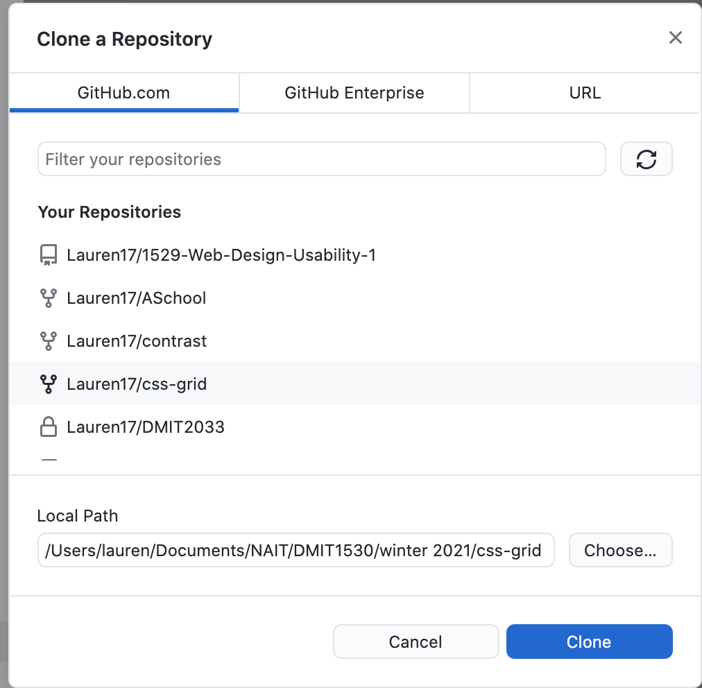
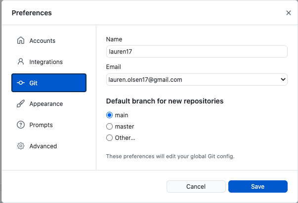
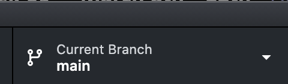
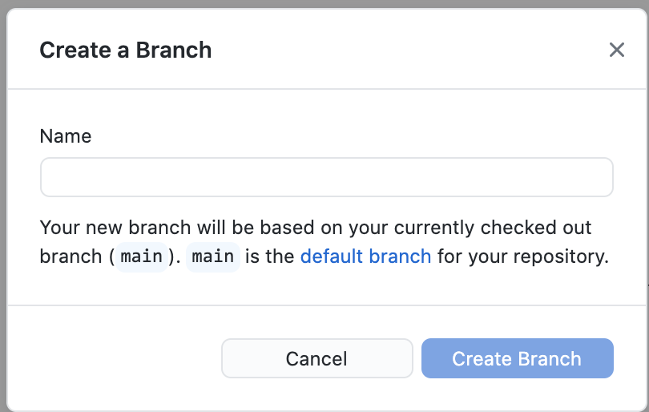

Github Demo using Github Desktop
Creating a local repo and uploading it to Github
- Open up Github Desktop
- Create new repository
- Find an area where you want to place the repository locally (documents, desktop, etc...)
- If you already have an existing repository...
- If you already have an existing repository, you can use that by "adding existing repository"
- Or... you can clone an repository down from Github
- Publish Repo to Github (yours)
- Go to github and you should see your new repo.
- Open your Repo in your IDE of choice.
- Add in a framework/project files
- for example: index.html, css, img, etc...
- To upload your work to Github, go back to the Github Desktop and commit your work. If you refresh, you see your uploaded files.
Cloning From Github
Let's say that you accidently deleted your local repo of your work, but thankfully you saved it on up on Github.
- Open up Github desktop, go to Current Repository tab and under the "Add" dropdown click "Clone Repository"
- Select the Repository you want to clone and secondly, find an area where you want to repo to live on your locally on your computer.

- Once your project has been cloned, open up in your IDE and work away!
Branching & Merging
Whether you are working on team or individually, it's a good idea to have multiple copies of your project. This way you are not committed to one idea, and you don't have to hit "ctrl z" a ton of times! Branching (creating copies) gives the ability to have mulitple copies of your project, without committing the master branch (the original repo), but it is important to know what branch you are on
Git Configuration
Before creating branches, it's always a good idea to assign an author name, this way you and team know what's been done by who
- To Set this up using command line:
- Git config --global user.name "your name"
- Git config -- global user.email "your email"
- To set this up using Github Desktop:
- Find where preferences is located and open it. You will see an area for 'Git', the "name and email config settings are there.

Creating a Branch
- Before creating a branch, we want to see if there any branches first. We can do that by looking at the middle tab (Current Branch). You should only see a "main branch"

- Create a new branch. Click the "New Branch" button and name your branch.

- *Note: If you have uncommited changes When you are creating a new branch you will be prompted with a diaglogue box that will ask, "leave changes on main" or bring my changes to test-a". Choose the second option. You want your branch to have the same content as the main.